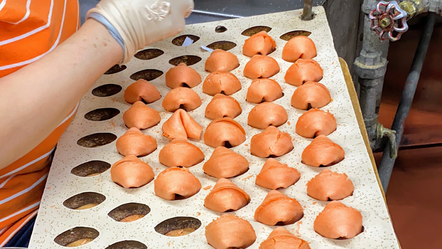
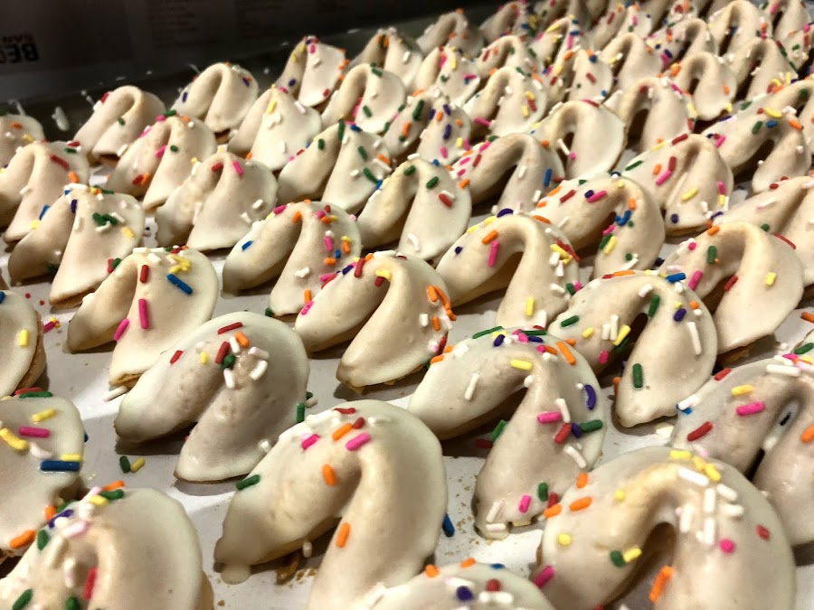

The little alley that smells like warm vanilla
Ross Alley doesn't announce itself. You have to know to look for it — a thin corridor off Jackson Street in San Francisco's Chinatown, tucked between restaurants and herbalists. But once you find the Golden Gate Fortune Cookie Factory, you don't forget it. The smell hits you first: a warm, sweet waft of vanilla and toasted dough drifting out into the alley. Step inside and you're suddenly somewhere that feels like it hasn't changed in decades — because honestly, it hasn't needed to.
The work here is done by hand, the old way. Workers press rounds of batter onto small circular irons, wait for the edges to crisp, and fold each cookie around a slip of paper while it's still pliable and hot. It's fast, practiced, almost meditative to watch. Every batch is made fresh throughout the day, and the factory stays open seven days a week — nine in the morning until seven at night — because Chinatown doesn't really have slow days.
People come for the novelty and stay for something harder to explain. Maybe it's the intimacy of watching something made right in front of you, or the way a bag of warm fortune cookies feels like a proper San Francisco souvenir — one that didn't come off a shelf at Fisherman's Wharf. Families stop in after dim sum on a Sunday. Tourists detour here off the guidebook trail. Locals bring visitors just to see their faces when the cookie comes off the iron. Whatever brings you down Ross Alley, you'll probably want to bring a few bags home.
"I've lived in San Francisco for eleven years and only found this place two years ago — which honestly feels like a crime. It's on Ross Alley, which you could absolutely walk past without noticing. But once you're inside, you're just standing there watching someone fold warm cookies with their bare hands and it's kind of mesmerizing. Bought three bags. Ate one on the walk back to BART."